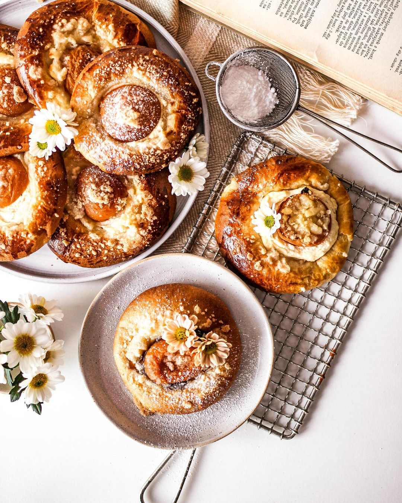

Hanácké koláče jsou mým nejoblíbenějším českým moučníkem. Vždy když je dělám vzpomenu si na svojí babičku. Není totiž dezertu, který bych s ní měla spojen více. Moučník pro dnešní odpoledne je tedy u nás jasný. Ještě než najedeme na velikonoční pečení, musíme si to trochu zpestřit. ❤️
#hanackekolace #dvouctihodnekolace #babicinakuchyne #sandtnerka